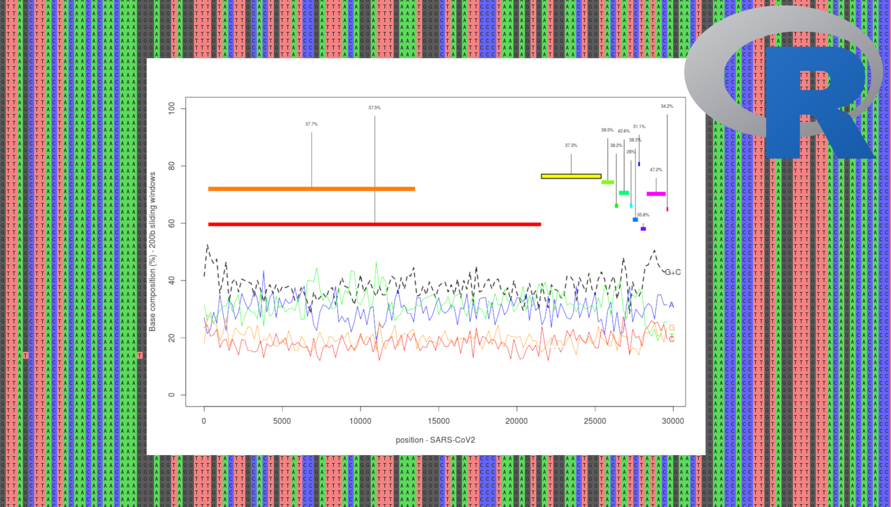
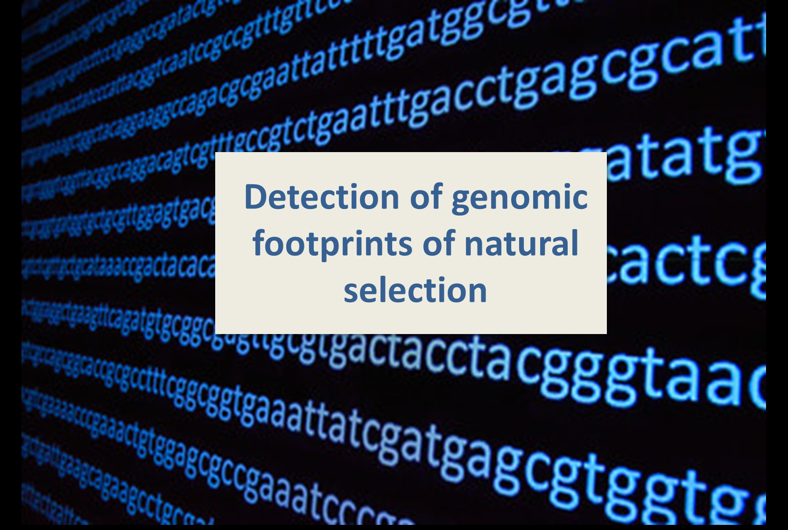
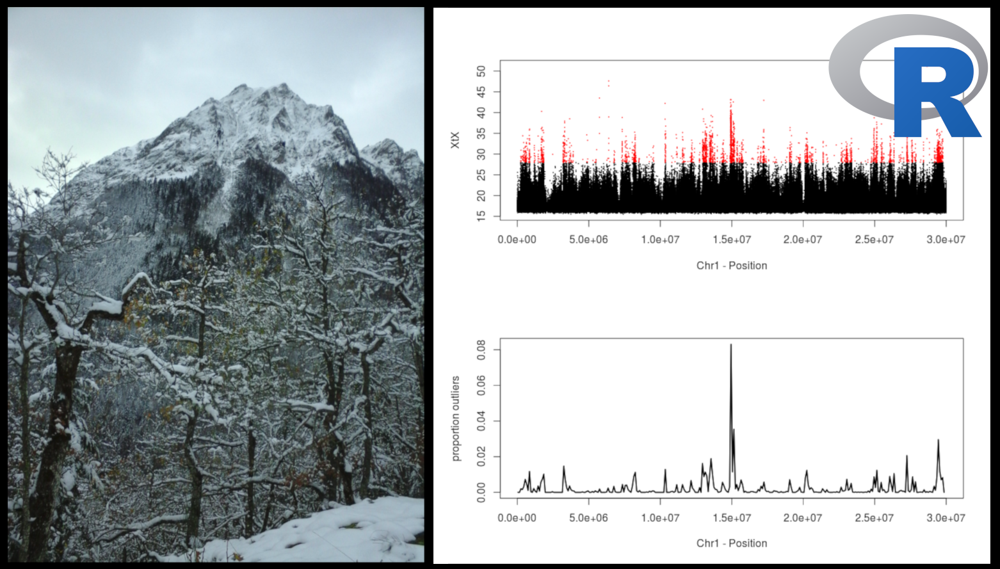
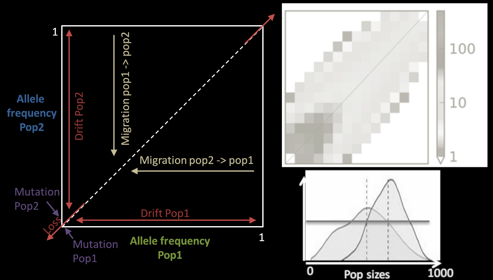

Thibault Leroy
Courses

Main objective of the course: introducing recent empirical evidence about germline and somatic mutations in plants
Course (2 hours): PDF
Main objective of the course: introducing some good practices when we start to work on a new species/dataset in population genetics /genomics (first look at the referenge genome assembly, dubious sequences/individuals, regions of false positive variants, ...)
Course: PDF
Practical: PDF/HTML version
Tutorial: HTML version
Data (practical): Files
Last update: April 2020
[Left: Multiple SARS-CoV2 alignments, including a plot that can be generated with the practical (after some efforts!) ]

Main objective of the course: brief introduction to different approaches: dN/dS, McDonald-Kreitman tests, nucleotide diversity & Tajima's D, detection of hard selective sweeps and Fst scans (master students)
Course (2 hours): PDF
Last update: November 2020

Main objective of the course: searching for footprints of natural (or artificial) selection by identifying SNPs exhibiting large allele frequency differences between populations (i.e. identifying SNPs with higher levels of differentiation than expected under strict neutrality).
Course: PDF
Practical: PDF/HTML version
Data (practical): Files
Last update: April 2020
[Left: Population differentiation XtX values for all SNPs locate in the first 30 Mb of the chromosome 1 of the oak genome. Outliers are shown in red, with the corresponding proportion per genomic window. The two plots can be generated with the practical (after some efforts!)]

Main objective of the course: brief introduction of three different methods among the most popular ones to infer the demographic history of a given species (sequential Markovian coalescent, composite-likelihood based inferences and Approximate Bayesian Computation).
Course (45 minutes): PDF
(last update: December 2019)
Course (2 hours): PDF
(last update: October 2020)
[Left: Mutation, migration, and drift as evolutionary forces changing the site frequency spectrum]